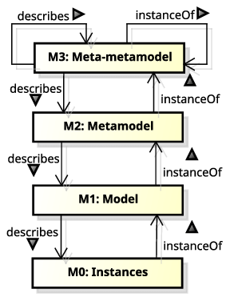
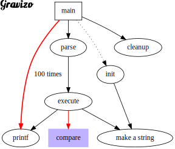
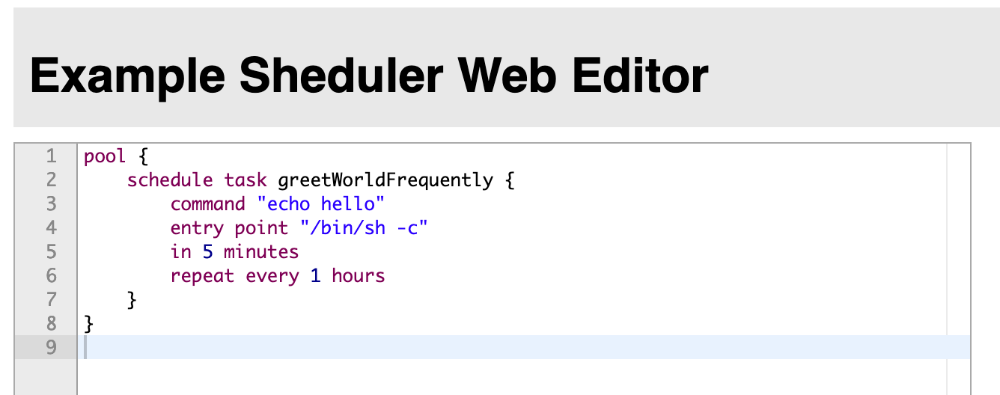

Model Driven Development
Lecture goals
- Understand metamodelling
- Understand domain specific languages
- Practice with model driven development in Xtext
Meta-modelling nomenclature
-
(Abstract) Language $\approx$ (abstract) syntax + semantics
-
Model $\approx$ the abstract language by which we describe the possible entities involved in a domain
- the model abstracts a number of similar systems rooted in the domain
- each system is an instance of the model it has been designed from
- a model is a template for several systems
-
In which language is the model expressed?
- Meta-model $\approx$ the abstract language by which we describe models
- for instance UML is the meta-model behind object-oriented programming
- UML $\equiv$ Unified Modeling Language
-
In which language is the meta-model expressed?
- Meta-meta-model $\approx$ the abstract language by which we describe meta-models
- for instance MOF is the meta-meta-model behind UML according to OMG
- MOF $\equiv$ Meta-Object Facility
- OMG $\equiv$ Object Management Group
Meta-model hierarchy
cf. https://www.omg.org/ocup-2/documents/Meta-ModelingAndtheMOF.pdf

Meta-model hierarchy example

Why are meta-models important?
-
Meta-models are the very first thing you should try to identify whenever approaching a new technology
-
If you grasp the meta-model, you grasp the essence of the technology
- which may be same for many other technologies
-
E.g. after you learned the basics of OOP (classes, methods, objects, etc.) you may easily learn any other OOP language
- by simply asking yourself how each meta-model element is expressed in the new language
- e.g. how are classes / methods / objects expressed in the new language?
- by simply asking yourself how each meta-model element is expressed in the new language
-
When you model a domain (e.g. with DDD) you are always exploiting some meta-model
- whether you are aware of it or not
Model-driven whatever
-
Several, slightly similar names, make create confusion
- e.g. model-driven engineering / development / architecture / etc.
-
Please read Martin Fowler’s article on Model-Driven Software Architecture to clarify
-
Despite the name the key ideas can be summarised as follow:
-
software engineering workflow should start by modelling the domain at hand carefully
- e.g. with DDD
- as opposed to focussing on algorithms and data structures
-
the production of a runnable implementation should be automated as much as possible
- e.g. by generating code from models
- as opposed to writing code by hand
-
About code generation from models
-
Assumption: the model is expressed by means of some formal language
-
Formal language $\approx$ interpretable by a machine
-
Formality is a prerequisite for automation
- the model is parsed by a machine
- the model is transformed into another formal language (e.g. OO programming language)
- the transformed model is rendered into a file (e.g. source code)
-
Is UML adequate? Is it the only choice? Any alternative?
- UML has a formal syntax and semantics (reified into graphical representation rules)
- rarely enforced by software tools
- furthermore UML is focussing on software
- only practical for software engineers
Towards domain specific languages
-
Domain-specific Languages (DSL) are programming / description / specification languages targetting one particular class of problems
- e.g. they are not meant to address all possible problems, but just the ones they are designed for
-
As opposed to general-purpose languages (GPL) which are targetting as many classes of problems as possible
- the programming languages you learned so far are GPL
-
DSL may act as custom meta-models for a given domain
-
Examples of DSLs you may already know:
- regular expressions for text processing
- SQL for database querying
- CSS for styling web pages
- HTML for describing web pages content
- DOT for graph visualisation
- PlantUML for UML diagrams visualisation
- Gherkin for Behavior-Driven Development (BDD)
- VHDL for hardware description
DSL Examples (pt. 1)
DOT: a DSL to visualise graphs
digraph G {
size ="4,4";
main [shape=box];
main -> parse [weight=8];
parse -> execute;
main -> init [style=dotted];
main -> cleanup;
execute -> { make_string; printf}
init -> make_string;
edge [color=red];
main -> printf [style=bold,label="100 times"];
make_string [label="make a string"];
node [shape=box,style=filled,color=".7 .3 1.0"];
execute -> compare;
}

-
DOT is a language that can describe graphs, for the sake of their visualisation
-
The most common implementation is the Graphviz toolkit
DSL Examples (pt. 2)
PlantUML: a DSL to visualise UML diagrams
interface Customer { + CustomerID getID() + String getName() + void **setName**(name: String) + String getEmail() + void **setEmail**(email: String) }note left: Entity
interface CustomerID { + Object getValue() } note right: Value Object
interface TaxCode { + String getValue() } note left: Value Object
interface VatNumber { + long getValue() } note right: Value Object
VatNumber -d-|> CustomerID TaxCode -d-|> CustomerID
Customer *-r- CustomerID
interface Customer { + CustomerID getID() + String getName() + void setName(name: String) + String getEmail() + void setEmail(email: String) } note left: Entity
interface CustomerID { + Object getValue() } note right: Value Object
interface TaxCode { + String getValue() } note left: Value Object
interface VatNumber { + long getValue() } note right: Value Object
VatNumber -d-|> CustomerID TaxCode -d-|> CustomerID
Customer *-r- CustomerID
DSL Examples (pt. 3)
Gherkin: a DSL to write BDD tests in a human-friendly way
Scenario: Verify withdraw at the ATM works correctly
Given John has 500$ on his account
When John ask to withdraw 200$
And John inserts the correct PIN
Then 200$ are dispensed by the ATM
And John has 300$ on his account
-
Gherkin is a language that can describe behavioural tests for software systems
- i.e. what system should do in given scenario
-
Syntax if very flexible and it seems like natural language
-
Stakeholders and engineer will agree on a set of behavioural specifications for the system
- written in Gherking
-
The most common implementation is Cucumber
- allowing the semi-automated translation of Gherkin specifications into executable tests
DSL Examples (pt. 4)
VHDL: a DSL to design hardware circuits
DFF : process(RST, CLK) is
begin
if RST = '1' then
Q <= '0';
elsif rising_edge(CLK) then
Q <= D;
end if;
end process DFF;
-
VHDL is a language that can describe hardware circuits
- i.e. the logic gates and their interconnections
-
Seems like an ordinary programming language, but:
- “variables” are indeed signals
- “functions” are indeed circuits
-
Technologies exist to automatically translate VHDL into hardware circuits
- e.g. Xilinx Vivado
-
… or to simulate the behaviour of the circuit (either in software or in FPGA)
DSL Examples (pt. 5)
Strumenta’s DSL for financial accounting
Details here: https://tomassetti.me/financial-accounting-dsl
Goal: use a DSL to describe taxes, pension contributions, and general financial calculations
pension contribution InpsTerziario paid by owner {
considered_salary = (taxable of IRES for employer - amount of IRES for employer - amount of IRAP for employer) by ownership share
rate = brackets [to 46,123] -> 22.74%,
[to 76,872] -> 23.74%,
[above] -> 0%
amount = (rate for considered_salary) with minimum 3,535.61
}
pension contribution InpsGLA paid by employer 2/3 and employee 1/3 {
considered_salary = gross_compensation of employee
rate = brackets [to 100,323] -> 27.72%,
[above] -> 0%
amount = rate for considered_salary
}
Benefits of adopting DSL
-
To communicate with domain experts in their own language
- e.g. Gherkin is a language that can be understood by both engineers and stakeholders
-
To let domain experts write the specifications (i.e. the model) of the system they want
- hence reducing ambiguities among stakeholders and engineers
-
To focus on the domain rather than on the implementation
-
To hide the implementation details from the domain experts
- e.g. exposing only business-related concepts, at the domain level
DSL vs. GPL
-
DSLs are not a replacement for GPLs
- they are complementary
-
Yet the difference is fuzzy, so lets try to clarify:
| GPL | DSL | |
|---|---|---|
| Domain | any | clear boundary |
| Syntactical constructs | many and composable | few and static |
| Expressiveness | Turing-complete | possibly, less than Turing-complete |
| Customisability | maximised | minimised / confined / absent |
| Defined by | companies or committees | teams of domain expertes |
| User base | large, anonymous, widespread | small, accessible, local |
| Evolution | slow, well-structured | fast-paced |
| Deprecation | very slow | feasible, often abrupt |
DSL Engineering
Semantics of DSL
-
Most often, the focus is on the syntax of the DSL
- as that’s how users will perceive it
-
Yet, the semantics of the DSL is equally important
- that dictates how the DSL works
- and this is what engineers (DSL implementers) focus upon
-
Intuitively, semantics is given to languages by writing the machinery supporting their execution
- three main aspects:
- conversion into runnable code (e.g. translation or interpretation) …
- … leveraging onto a execution engine (i.e. library functionalities supporting the runnable code) …
- … in turn relying on a software platform (e.g. JVM, .NET, etc.)
- three main aspects:
The role of DSL engineers mostly focuses on steps 1 & 2 (other than defining the syntax)
Converting DSL into runnable code
Two main approaches:
-
Translation: translates a DSL script into a language for which an execution engine on a given target platform exists
- a.k.a. code generation or transpilation if the target language is high-level (e.g. Java, JS, or C#)
- e.g. Xtend, or TypeScript, despite being GPL, are transpiled into Java and JS respectively
- a.k.a. compilation if the target language is low-level (e.g. assembly, JVM bytecode, CRL, etc.)
- e.g. Java is compiled into JVM bytecode (despite being a GPL)
- a.k.a. code generation or transpilation if the target language is high-level (e.g. Java, JS, or C#)
-
Interpretation: the execution engine is able to parse and execute the DSL script directly
- a.k.a. runtime interpretation or runtime compilation if the execution engine is able to compile the DSL script into a runnable code
- e.g. 2P-Kt is a GPL interpreted by a custom execution engine, written in Kotlin, running on the JVM
- a.k.a. runtime interpretation or runtime compilation if the execution engine is able to compile the DSL script into a runnable code
In both cases, there are technical prerequisites:
- a parser for the actual syntax of the DSL should exist / be generated
- the execution engine for the target platform should exist
External vs. internal DSL
-
So far we discussed the so-called external DSLs
- i.e. where the syntax is totally custom, hence requiring a custom parser
-
As opposed to internal (a.k.a. embedded) DSLs
- i.e. where the syntax is a subset of some pre-existing GPL…
- … whose syntax is flexible enough to allow costimisation
-
Creating internal DSL is a recent trend enabled by the wide adoption of flexible GPL
- e.g. Kotlin, Groovy, or Scala, which come with ad-hoc constructs
- e.g. trailing-lambda convention, infix notation, operator overloading, etc.
- e.g. Kotlin, Groovy, or Scala, which come with ad-hoc constructs
-
Examples of internal DSL you may already know:
-
More on this topic in prof. Pianini’s slides
Example of internal DSL: build.gradle.kts
plugins {
`java-library`
}
dependencies {
api("junit:junit:4.13")
implementation("junit:junit:4.13")
testImplementation("junit:junit:4.13")
}
configurations {
implementation {
resolutionStrategy.failOnVersionConflict()
}
}
sourceSets {
main {
java.srcDir("src/core/java")
}
}
java {
sourceCompatibility = JavaVersion.VERSION_11
targetCompatibility = JavaVersion.VERSION_11
}
tasks {
test {
testLogging.showExceptions = true
useJUnit()
}
}
- domain: build-automation
- this is pure Kotlin + Gradle library (containing an “execution engine”)
- Gradle library is designed to be used as Kotlin DSL
Key aspects of internal DSL
-
Internal DSL may ease adoption of the DSL it self
- users may already know the GPL
- hence they may be able to use the DSL without learning a new language
- hence they may use the same toolkits available for the GPL (e.g. debugger, IDE, etc.)
- users may already know the GPL
-
Internal DSL simplify the DSL engineering process
- no need to write and maintain a custom parser
- as the parser is already provided by the GPL
- no need to write and maintain custom toolkits
- as the GPL toolkits may be reused
- no need to write and maintain a custom parser
-
The integration among the GPL and the DSL is tight
- the DSL may exploit the constructs of the GPL, and this is commonly desired
- the DSL is technologically and syntactically bound to the GPL, and this is commonly undesired
About the execution engine
-
Be it internal/external or transpiled/interpreted, the DSL needs an execution engine
- i.e. a library providing the functionalities of the DSL
-
This is no different from any other library supporting some given domain
-
Except that hacks could exploit to ease the adoption of the target DSL syntax
MDD in Practice
Tools for MDD
-
Eclipse’s Xtext widespread tool for MDD
-
JetBrains’ MPS main competitor of Xtext
-
Langium clone of Xtext, but based on TypeScript
Other relevant tools for language engineering
-
ANTLR only parser generation for Java, JS, Python, .Net, C++
-
Language Server Protocol (LSP)
Key idea behind LSP

-
de-facto standard protocol among IDEs
-
providing various IDE-like capabilities as-a-service
-
making it easier to support multiple IDEs for the same language
-
must-have feature for any MDD tool we may consider for our DSL
About Xtext
-
A framework for MDD and, in particular, external DSL
-
Xtext provides a language for defining languages…
-
… which is also a meta-modelling language
-
Meta-modelling and DSL definition are done simultaneously
-
It automatically generates the full language infrastructure, including
- model interfaces / classes (EMF compliant)
- parser
- validator (with pluggable rules)
- transpiler stub
- scoping (with pluggable rules)
- IDE support via LSP
- syntax colouring
- etc.
- test stubs
-
Exercises and examples about MDD will be based on Xtext
Running example: the task scheduling domain
-
Users may be willing to schedule custom tasks on a machine
-
Task $\equiv$ running any command available on the OS
- via some shell (e.g.
bash,cmd,powershell, etc.) of choice
- via some shell (e.g.
-
Scheduling implied defining when the task should be executed
- relatively to now: e.g. in 5 minutes, in 1 hour, etc.
- absolutely: e.g. today at 10:00, tomorrow at 12:00, on 2023/11/23 at 13:16 etc.
- before or after some other task
- periodically: e.g. every 5 minutes, every 48 hours, etc.
-
Notice that tasks may be inter-dependent (e.g. because of before/after relations)
Running example: the Sheduler DSL (pt. 1)
Sheduler $\equiv$ Shell + Scheduler
¯\(ツ)/¯
-
We shall use Xtext’s meta-modelling language to define the domain of task scheduling
-
Simultaneously, we will define the syntax of the DSL
-
We will then add scoping and validation rules to the DSL, via the Xtext framework
-
The next step is designing and implementing the execution engine for the DSL
- we shall exploit Java’s
ScheduledExecutorServices for this purpose
- we shall exploit Java’s
-
Finally, we will create a code generator creating Java code from the DSL
Running example: the Sheduler DSL (pt. 2)
Code: https://github.com/unibo-spe/sheduler-lang
-
Clone with Git the
exercisesbranch -
The cloned repository is and Ecplise project
- please install Eclipse for DSL developers from Xtext’s website
-
In Eclipse, import the repository root directory as a Gradle project
-
You may also use IntelliJ, in that case just import the
sheduler-lang/directory as Gradle project- no syntax colouring or Xtext support on IntelliJ or VSCode
Xtext project structure (pt. 1)
sheduler-lang/
├── build.gradle
├── gradle/
├── gradle.properties
├── gradlew
├── gradlew.bat
├── it.unibo.spe.mdd.sheduler/
│ ├── build.gradle
│ └── src/
│ └── main/
│ └── java/
│ └── it/unibo/spe/mdd/sheduler/
│ └── sheduler
│ ├── GenerateSheduler.mwe2
│ └── Sheduler.xtext
├── it.unibo.spe.mdd.sheduler.ide/
│ └── build.gradle
├── it.unibo.spe.mdd.sheduler.web/
│ └── build.gradle
└── settings.gradle
Xtext project structure (pt. 2)
- root project is just the container of others
shedulerproject is where the domain is modelled, and the language is defined- including parser, validator, scoping, etc.
- 2 very important files:
Sheduler.xtext: this is where modelling and language definition occursGenerateSheduler.mwe2: this is where the automated generation of scoping, validation, generation, testing facilities is configured
ideproject is where the generic IDE support via LSP is defined- depends on
shedulerproject - you don’t really need to touch anything in here: LSP code is generated by Xtext
- this project may be packed into a runnable Jar for starting the LSP server
- depends on
webproject is where the web-based playground for our language is defined- depends on
ideproject - you don’t really need to touch anything in here: the web playground is generated by Xtext
- this project may be packed into a runnable Jar for starting the web playground
- depends on
Relevant Gradle tasks for Xtext
-
generateXtextLanguagegenerates the language infrastructure- there including:
- domain model interfaces / classes
- parser
- validator stub
- scoping stub
- code generation stub
- this task is automatically executed by Gradle before compilation
- you may run it manually if you want to force the generation of the language infrastructure
- there including:
-
shadowJargenerates the runnable Jar for the LSP server- this task should be run manually if you want to deploy the LSP server
-
jettyRunstarts the Web-playground for the Sheduler language- this task should be run manually during manual testing of the language
-
ordinary Gradle tasks for compilation, testing, etc. are as usual
The GenerateSheduler.mwe2 file
-
This is automatically generated by Eclipse when setting up an Xtext project
-
Pretty self-explanatory:
module it.unibo.spe.mdd.sheduler.GenerateSheduler import org.eclipse.xtext.xtext.generator.* import org.eclipse.xtext.xtext.generator.model.project.* var rootPath = ".." Workflow { component = XtextGenerator { configuration = { project = StandardProjectConfig { baseName = "it.unibo.spe.mdd.sheduler" rootPath = rootPath runtimeTest = { enabled = true } web = { enabled = true } mavenLayout = true } code = { encoding = "UTF-8" lineDelimiter = "\r\n" fileHeader = "/*\n * generated by Xtext \${version}\n */" preferXtendStubs = false } } language = StandardLanguage { name = "it.unibo.spe.mdd.sheduler.Sheduler" fileExtensions = "shed" serializer = { generateStub = false } validator = { generateDeprecationValidation = true } generator = { generateXtendStub = false generateJavaMain = true } junitSupport = { junitVersion = "5" generateXtendStub = false generateStub = true } } } }
Let’s model a bit
grammar it.unibo.spe.mdd.sheduler.Sheduler with org.eclipse.xtext.common.Terminals
generate sheduler "http://www.unibo.it/spe/mdd/sheduler/Sheduler"
TaskPoolSet: pools+=TaskPool+ ;
TaskPool: 'pool' name=ID? '{' tasks+=Task+ '}' ;
Task:
'schedule' ('task' name=ID)? '{'
'command' command=STRING
('entry' 'point' entrypoint=STRING)?
(
'in' relative=RelativeTime |
'at' absolute=AbsoluteTime |
'before' before=[Task] | // square brackets denote references to other model elements
'after' after=[Task]
)
('repeat' 'every' period=RelativeTime)?
'}'
;
AbsoluteTime: date=Date time=ClockTime ;
Date: year=INT '/' month=INT '/' day=INT;
ClockTime: hour=INT ':' minute=INT (':' second=INT (':' millisecond=INT (':' nanosecond=INT)?)?)? ;
RelativeTime: timeSpans += TimeSpan (('and' | ',' | '+') timeSpans += TimeSpan)* ;
TimeSpan: duration=INT unit=(TimeUnit|LongTimeUnit);
enum TimeUnit: NANOSECONDS = 'ns' | MILLISECONDS = 'ms' | SECONDS = 's' | MINUTES = 'm' | HOURS = 'h' | DAYS = 'd' | WEEKS = 'w' | YEARS = 'y' ;
enum LongTimeUnit returns TimeUnit:
NANOSECONDS = 'nanoseconds' |
MILLISECONDS = 'milliseconds' |
SECONDS = 'seconds' |
MINUTES = 'minutes' |
HOURS = 'hours' |
DAYS = 'days' |
WEEKS = 'weeks' |
YEARS = 'years' ;
Generated interfaces
Classes are generated too!
Try the syntax
-
Run task
jettyRunto start the web playground -
Copy-paste the following example program:
pool { schedule task greetWorldFrequently { command "echo hello" entry point "/bin/sh -c" in 5 minutes repeat every 1 hours } } -
What you should see (press Ctrl+Space to see the auto-completion menu) 
About validation rules (pt. 1)
-
Validation rules are defined in the
ShedulerValidatorclass- package:
it.unibo.spe.mdd.sheduler.validation - Gradle sub-project:
sheduler-lang/it.unibo.spe.mdd.sheduler
- package:
-
Stub class is generated by Xtext when running the
generateXtextLanguagetask- which simply triggers the execution of the
GenerateSheduler.mwe2file
- which simply triggers the execution of the
-
Content of the stub and validation rule example:
package it.unibo.spe.mdd.sheduler.validation; import it.unibo.spe.mdd.sheduler.sheduler.*; import org.eclipse.xtext.validation.Check; import org.eclipse.xtext.validation.CheckType; public class ShedulerValidator extends AbstractShedulerValidator { @Check(CheckType.FAST) public void ensureDateIsValid(Date date) { if (date.getYear() < 0) { error("Year must be positive", date, ShedulerPackage.Literals.DATE__YEAR, 0); } if (date.getMonth() < 1 || date.getMonth() > 12) { error("Month must be between 1 and 12", date, ShedulerPackage.Literals.DATE__MONTH, 0); } if (date.getDay() < 1 || date.getDay() > 31) { error("Day must be between 1 and 31", date, ShedulerPackage.Literals.DATE__DAY, 0); } } }- documentation here: https://www.eclipse.org/Xtext/documentation/303_runtime_concepts.html#validation
About validation rules (pt. 2)
Remarks:
- the name of the validation method is meaning-less
- only the type of the parameter matters
- plus the presence of the
@Checkannotation - the
@CheckTypeannotation is optional, and defaults toCheckType.NORMALFASTwill run whenever a file is modifiedNORMALchecks will run when saving the file, andEXPENSIVEchecks will run when explicitly validating the file via the menu option
- method
error(...)may be replaced bywarning(...)for minor issues
Exercise 1: custom validation rules (pt. 1)
Write custom validation rules covering the following constraints:
-
Warning if attempting to represent some
RelativeTimeasjava.time.Durationobject would result in an overflow- cf. the utility methods in class
TimeUtils
- cf. the utility methods in class
-
Warning if attempting to represent some
AbsoluteTimeasjava.time.LocalDateTimeobject would result in an overflow- cf. the utility methods in class
TimeUtils
- cf. the utility methods in class
-
Warning if some
AbsoluteTimeis in the past or in the present (only future admitted)- cf. the utility methods in class
TimeUtils - cf.
LocalDateTime.now() - cf.
LocalDateTime.isBefore()
- cf. the utility methods in class
-
Error is some
ClockTimeis invalid- hour must be between 0 and 23
- minute must be between 0 and 59
- second must be between 0 and 59
- millisecond must be between 0 and 999
- nanosecond must be between 0 and 999
Exercise 1: custom validation rules (pt. 2)
-
Error if some
TimeSpanis invalid- negative duration
- 1000 or more when the unit is nano/milli seconds
- 60 or more when the unit is minutes/seconds
- 24 or more when the unit is hours
-
Error if any two tasks from the same pool have the same name
-
Error if any two pools have the same name
-
No periodicity should be allowed for tasks that are scheduled before/after some other task
About scoping rules
-
Validation rules are defined in the
ShedulerScopeProviderclass- package:
it.unibo.spe.mdd.sheduler.scoping - Gradle sub-project:
sheduler-lang/it.unibo.spe.mdd.sheduler
- package:
-
Stub class is generated by Xtext when running the
generateXtextLanguagetask -
Content of the stub and validation rule example:
public class ShedulerScopeProvider extends AbstractShedulerScopeProvider { @Override public IScope getScope(EObject context, EReference reference) { return super.getScope(context, reference); } }- Documentation here: https://www.eclipse.org/Xtext/documentation/303_runtime_concepts.html#scoping
-
Remarks
- only one method should be overridden
- it should return an
IScopeobject, for eachEObjectcontaining someEReference - in our case, this could only happen in
Tasks’beforeandafterproperties - the scope is essentially a container of
EObjects, which are the possible values for theEReference- the implementer of the scope provide should select which
EObjects to include in the scope
- the implementer of the scope provide should select which
Exercise 2: custom scoping rules
TO-DO
Write a custom scoping policy for the before and after properties of Tasks, such that:
- only
Tasks from the sameTaskPoolcan be referenced by someTask Tasks from someTaskPoolcannot be referenced byTaskfrom otherTaskPools- anonymous
Tasks (i.e. those without a name) cannot be referenced at all
Documentation here: https://www.eclipse.org/Xtext/documentation/303_runtime_concepts.html#scoping
Giving semantics to the language
-
Two approaches:
- interpretation: the DSL is interpreted by some execution engine
- translation: the DSL is translated into some executable code, leveraging on the API of some execution engine
-
Both approaches require the definition of an execution engine
- i.e. a library providing the functionalities of the DSL
Focus on the execution engine
-
Is there functionality in the JDK which supports the scheduling of tasks in the future?
- if yes: let’s use it! otherwise, let’s look for some third-party library, or implement it ourselves
- luckily, we may use
ScheduledExecutorServices !
-
Same question for the execution of custom commands via some shell?
- luckily, we may use
ProcessBuilders!
- luckily, we may use
-
Design insights:
- we may define some custom notion of
ShedulerTaskencapsulating:- the command to be executed
- optionally, the shell to be used
- the initial delay
- optionally, the period
- optionally, the tasks to be executed before/after
- the functionalities for executing the command via
ProcessBuilders
- we may define some custom notion of
ShedulerRuntime- leveraging on the
ScheduledExecutorServiceAPI… - … to schedule the
ShedulerTasks for execution
- leveraging on the
- we may define some custom notion of
Example: the ShedulerRuntime and ShedulerTask classes
public class ShedulerRuntime {
private final ScheduledExecutorService delegate;
public ShedulerRuntime(ScheduledExecutorService delegate) {
this.delegate = Objects.requireNonNull(delegate);
}
public void schedule(SheduleTask task) {
if (task.isPeriodic()) {
delegate.scheduleWithFixedDelay(
task.asRunnable(),
task.getDelay().toMillis(),
task.getPeriod().toMillis(),
TimeUnit.MILLISECONDS
);
} else {
delegate.schedule(
task.asRunnable(),
task.getDelay().toMillis(),
TimeUnit.MILLISECONDS
);
}
}
}
public class ShedulerTask {
private ShedulerTask(String name, String command, String entrypoint, Duration delay) { /*...*/ }
public String getName() { /*...*/ }
public String getCommand() { /*...*/ }
public String getEntrypoint() { /*...*/ }
public Duration getPeriod() { /*...*/ }
public boolean isPeriodic() { /*...*/ }
public SheduleTask setPeriod(Duration period) { /*...*/ }
public Duration getDelay() { /*...*/ }
public Process executeAsync() throws IOException {
return new ProcessBuilder(entrypoint, command).inheritIO().start();
}
public Runnable asRunnable() {
return () -> {
try {
executeAsync();
} catch (IOException e) {
e.printStackTrace();
}
};
}
public static ShedulerTask in(String name, String command, String entrypoint, Duration delay) { /*...*/ }
public static ShedulerTask in(String command, String entrypoint, Duration delay) { /*...*/ }
public static ShedulerTask at(String name, String command, String entrypoint, LocalDateTime dateTime) { /*...*/ }
public static ShedulerTask at(String command, String entrypoint, LocalDateTime dateTime) { /*...*/ }
}
Usage example:
pool myPool {
schedule task greetFrequently {
command "echo hello"
entry point "/bin/sh -c"
in 5 minutes
repeat every 1 hours
}
schedule task greetOnce {
command "echo hello"
entry point "/bin/bash -c"
at 2030/10/11 12:13
}
}
pool otherPool {
schedule task shutdownAfter1Day {
command "sudo shutdown now"
entry point "/bin/zsh -c"
in 1 days
}
}
public static void main(String[] args) {
ShedulerRuntime runtime = new ShedulerRuntime(Executors.newScheduledThreadPool(1));
pool_myPool(runtime);
pool_otherPool(runtime);
}
private static void pool_myPool(ShedulerRuntime runtime) {
ShedulerTask task0 = ShedulerTask.in("greetFrequently", "echo hello", "/bin/sh -c", Duration.parse("PT5M"));
task0.setPeriodic(Duration.parse("PT1H"));
runtime.schedule(task0);
ShedulerTask task1 = ShedulerTask.at("greetOnce", "echo hello", "/bin/bash -c", LocalDateTime.parse("2030-10-11T12:13"));
runtime.schedule(task1);
}
private static void pool_otherPool(ShedulerRuntime runtime) {
ShedulerTask task0 = ShedulerTask.in("shutdownAfter1Day", "sudo shutdown now", "/bin/zsh -c", Duration.parse("PT24H"));
runtime.schedule(task0);
}
Exercise 3: write a code generator for the Sheduler DSL
-
The code generator should output code having a structure similar to the one shown in the previous slide
-
The
ShedulerRuntimeandShedulerTaskclasses may be generated as they are in the example -
The key part is generating the main, where components are assembled together
public class ShedulerGenerator extends AbstractShedulerGenerator {
@Override
public void doGenerate(Resource resource, IFileSystemAccess2 fsa, IGeneratorContext context) {
File inputFile = new File(resource.getURI().toFileString());
TaskPoolSet taskPools = (TaskPoolSet) resource.getContents().get(0);
String inputFileName = inputFile.getName().split("\\.")[0];
fsa.generateFile("ShedulerRuntime.java", "CODE HERE");
fsa.generateFile("ShedulerTask.java", "CODE HERE");
fsa.generateFile("ShedulerSystem_" + inputFileName + ".java", "CODE HERE");
}
}
Exercise 4: write an interpreter for the Sheduler DSL
-
No code generation, just a
main- parsing the DSL
- and converting each
Taskinto aShedulerTask - and running each task via some
ShedulerRuntime
-
The
ShedulerRuntimeandShedulerTaskclasses should be part of the runtime -
The key part is writing the
main:
public class ShedulerInterpreter {
public static void main(String[] args) {
if (args.length == 0) {
System.err.println("Aborting: no path to .shed file provided!");
return;
}
Injector injector = new ShedulerStandaloneSetup().createInjectorAndDoEMFRegistration();
ShedulerInterpreter interpreter = injector.getInstance(ShedulerInterpreter.class);
interpreter.runFile(args[0]);
}
@Inject private Provider<ResourceSet> resourceSetProvider;
@Inject private IResourceValidator validator;
protected void runFile(String string) {
// Load the resource
ResourceSet set = resourceSetProvider.get();
Resource resource = set.getResource(URI.createFileURI(string), true);
TaskPoolSet taskPools = (TaskPoolSet) resource.getContents().get(0);
ShedulerRuntime runtime = new ShedulerRuntime(Executors.newScheduledThreadPool(1));
for (TaskPool pool : taskPools.getPools()) {
for (Task task : pool.getTasks()) {
runtime.schedule(toShedulerTask(task));
}
}
}
private ShedulerTask toShedulerTask(Task task) {
// TODO
}
}
Exercise 5: support for task dependencies
-
Add support for task dependencies (before/after) to the execution engine
- the parser already supports that
- the execution engine requires some refactoring
-
Update the code generator accordingly
-
Update the interpreter accordingly